This is a list of release notes for Alpha Anywhere 3.1 to verify/move into the help system. The following directories are associated with this file: "Alpha_4.3.2_ReleaseNotes_files"
As this content is moved into the help system, please delete it from this file.
Guidelines:
| UX Component | Tutorial - Uploading Files using the File Upload - User Defined Action |
There are two different actions in Action
Javascript for uploading files from a UX
component. If the UX component has been 'data
bound' then the 'File Upload' action is
appropriate. But if the UX component is not data
bound, or if you want to write your own handler
for the binary data that was uploaded to the
server, the 'File Upload - User Defined' action
should be used. When you use the File Upload - User Defined action, an Xbasic function that you define is called after the file (or multiple files if you choose to allow multiple files to be uploaded) has been uploaded. Your Xbasic function is free to process the uploaded data in any way. In this video we show how the File Upload - User Defined action can be used to save the uploaded data to a file on the server. Watch Video - Part 1 Watch Video - Part 2 Download Component Date Added: 2014-10-02 |
| UX Component | Tutorial - Uploading Files and Images to a Data Bound UX Component |
When you upload a file or an image to a data
bound UX component, the assumption is that you
want to store the uploaded image or file in the
record to which the UX component is bound. You
can either store the binary data that was
uploaded in a field in the record, or you can
save the binary data that was uploaded into a
file on the server and then store the filename
of the file in a character field in the record. In this video we show how image upload and file upload to a data bound UX component can be done. Images and files are uploaded to both binary and character fields in the record. Introduction Watch Video - Part 1 File Upload to a Character Field Watch Video - Part 2 Watch Video - Part 3 Watch Video - Part 4 File Upload to a Binary Field Watch Video - Part 5 Watch Video - Part 6 Image Upload to a Character Field Watch Video - Part 7 Watch Video - Part 8 Image Upload to a Binary Field Watch Video - Part 9 Download Component (Note: The zip file also contains the MySQL SQL script to create the table that the UX component is based on.) Date Added: 2014-10-02 |
| UX Component | Using the CSS Calc() Function Instead of Flex Layout Containers to Create Dynamically Sized Controls |
A common requirement when building UX components
is to create a row of controls where some of the
controls are fixed size and the other controls
dynamically contract or expand to consume the
remaining space on the row. Typically, the Flex Layout container is used to achieve this design goal, but the built-in CSS calc() function is an alternative (and simpler) way for achieving the same result. The drawback of the calc() function is that not all versions of the Chrome browser on older Android devices support the CSS calc() function. In this video we contrast the use of Flex Layout containers and the CSS calc() function. Watch Video Download Components Date Added: 2014-10-12 |
| UX Component | Getting the Display Value in a DropdownBox Control |
When you define the choices in a Dropdownbox
Control you can specify both the display value
and the stored value for each choice in the
control. When you read the value from the
control (using the .getValue() method), the
stored value is returned. In some cases you
might want to read the 'display' value. In this video we show how you can write a small amount of Javascript to read the dropdownbox control's display value. Watch Video Download Component Date Added: 2014-10-13 |
| UX Component | Intro to JSON |
JSON is ubiquitous in Web application
development. Having a good understanding of JSON
is very helpful in building web applications. In
this series of videos we introduce you to
various ways in which you can work with JSON on
the server side (using Xbasic) and on the
client-side (using Javascript). We show how JSON is the ideal way for sending complex data from the client to the server, or from the server to the client (in an AJAX callback). Using Xbasic on the server-side to work with JSON Watch Video - Part 1 Watch Video - Part 2 Watch Video - Part 3 Using Javascript on the client-side to work with JSON Watch Video - Part 1 Watch Video - Part 2 Using JSON to send complex data to the server from the client Watch Video - Part 1 Watch Video - Part 2 Using JSON to send complex data from the server to the client Watch Video - Part 1 Watch Video - Part 2 Watch Video - Part 3 Advanced example - sending complex data from the server and formatting the data for presentation on the client side using a template Watch Video - Part 1 Watch Video - Part 2 Watch Video - Part 3 Watch Video - Part 4 Download component Date Added: 2014-10-15 |
| UX Component - Disconnected Applications | Showing Which Fields Have Been Edited |
When you have a List with an associated Detail
View and you edit the data in one of the rows of
the List, an icon (whose appearance you can
customize) is shown in the List row to indicate
that the List row has data that has been edited,
but not yet synchronized. In this video we show how you can indicate the dirty fields in a List row that has been edited. You can specify a custom CSS class to apply to the Detail View control if the field value has been edited. Watch Video Download Component Date Added: 2014-10-18 |
| UX Component - Mobile Applications | Panel Navigator with a Button Bar To Select Active Panel - Quick Start Templates |
A common design pattern when building mobile
applications is to use a button bar in the
footer of the screen to select the active 'page'
in the application. The selected button should
be highlighted so the user knows which button
corresponds with the current page. In this video we show how you can use a built-in template to get a quick start on your application if you want to use this pattern. We explain what's going on behind the scenes so that you understand how the component works. Watch Video - Part 1 Watch Video - Part 2 In the next video we show how the component can be extended to allow for more navigation buttons that can been seen at once on a phone. The user can drag scroll horizontally on the button bar to see the other buttons. Watch Video Date Added: 2014-10-28 |
| UX Component | Video Player Control |
The UX Component now includes a Video Player
control. Previously, to include videos in the UX
component, you created a Video Player component
and embedded the Video Player component in
a UX control. Using the new Video Player control
is much easier.
In addition, there are new actions in Action
Javascript that allow you to perform actions on
the Video Player control. Watch Video Download Component Date Added: 2014-11-15 |
| UX Component | Embedded Components - Delay Render - Techniques |
(This video is aimed at advanced developers.) A
common pattern in large applications is to
design a UX component that has several embedded
components. The embedded components are
typically on different Panel Cards that are all
wrapped in a Panel Navigator. The embedded
components all have their 'Delay render till
visible' property set to true so that the
initial load of the parent UX is not slowed
down. However, while the user is working on PanelCard 1 (for example), you might want to fire off a Ajax callback to load PanelCard2's embedded components in the background so that when the user does eventually navigate to PanelCard 2, the embedded component has already been loaded and the user does not perceive any delay. This video shows how this can be done. Watch Video Download Components Date Added: 2014-11-19 |
| UX Component | Using a 'Slider' to Display the Value in a Numeric Field |
In a List control that display numeric values,
instead of displaying the number, you might
instead want to use a 'slider' to represent the
numeric values. This video shows how the template for the numeric field can be easily modified to display the number using a 'slider'. Watch Video Download Component Date Added: 2014-11-19 |
| UX Component - List Control | Displaying a Google Map in Each Row of a List |
In this video we show how you can add a Google
Map to each row in a List to display the
position of a point in the current row on a map. Watch Video Download Component Date Added: 2014-11-19 |
| UX Component | Printing a Report Using Same Filter/Order as a List Control |
A common pattern in Grids is to have a button on
a Grid that prints a report showing the same
records that are in the current Grid query. Now
you can use a similar pattern for List controls
on a UX component. In this video we show a UX with a List control. The List control is based on a SQL query and the UX has a button that allows you to perform a server-side filter on the List (for example, search for all records in France or Denmark). The UX has a button that prints a report that is based on the same SQL tables as the List and automatically uses the same filter for the report as the List. Watch Video Date added: 2014-11-27 |
| Miscellaneous | Javascript File Editor |
When you edit a Javascript File from the Web
Projects Control Panel, the editor used to edit
the file was previously a modal editor. It has
now been rewritten to use a MDI window, which
means you can leave the editor open while you
work on other files. Also, the editor has an
integrated Interactive Window that allows you to
test Javascript code. Watch Video Date added: 2014-11-30 |
| UX and Grid Component | Xbasic Function Library |
When a component makes an Ajax callback, an
Xbasic function that you define handles the
callback. This function is typically defined
within the component (in the Xbasic Function
Declarations section). This means that the
function definition cannot be used in some other
component. By defining the function in an Xbasic Function Library that is linked into the component, you can now easily define Xbasic functions that can be shared among multiple components. NOTE: Xbasic Function Libraries are an alternative to compiling your functions into an .aex file. Watch Video Date added: 2014-11-30 |
| Miscellaneous | Xbasic Modules |
An Xbasic Module is a file that contains Xbasic
function and class definitions. The code defined
in a module can be made available to other
Xbasic code by using the require() function. This video demonstrates how Xbasic Modules can be used. Watch Video Date added: 2014-11-30 |
| UX Component - List Control | Image Capture Using the Camera in the List Detail View - Disconnected Applications |
A common requirement in a mobile application is
to be able to capture images using the camera on
the device. It is also a common requirement that
the application work when it is disconnected
(i.e. there is no internet connection
available). In this video we show how to build a disconnected mobile application that supports image capture. Watch Video - Part 1 Watch Video - Part 2 Watch Video - Part 3 Watch Video - Part 4 Watch Video - Converting the app to a mobile layout - Part 1 Watch Video - Converting the app to a mobile layout - Part 2 Download Component Date added: 2014-12-18 |
WorldPay API - A new XBasic class called WorldPayAPI::SoapActions has been added to support the WorldPay Online Commerce Suite. All of the documented methods of the WorldPay SOAP API are included in this class.
For more information on the WorldPayAPI Xbasic class, click here.
json_to_xml() Function - Convert JSON to XML - Takes a string of JSON data and converts it to XML.
Syntax
c xml = json_to_xml(c json, c attribute)
Example
dim json as c
json = <<%txt%
{
"firstname" : "john" ,
"lastname" : "public" ,
"num" : [1,2,3] ,
"flag" : true ,
"place" : { "state" : "Texas"}
}
%txt%
dim xml as c
xml = json_to_xml(json,"person")
The resulting XML string looks like this:
<?xml version="1.0" encoding="UTF-8"?>
<person>
<firstname>john</firstname>
<lastname>public</lastname>
<num>1</num>
<num>2</num>
<num>3</num>
<flag>true</flag>
<place>
<state>Texas</state>
</place>
</person>
UX Component - List - Detail View - Client-side Events - 'hasClientSideValidationErrors' - A new client-side event has been added. the 'hasClientSideValidationErrors' event fires when the user tries to save Detail View edits back to the List and one or more controls in the Detail View has a client-side validation error.
UX Component - Action Javascript - Camera - A new action has been added to Action Javascript to allow you to capture an image using the camera on a mobile device.
The 'Image Capture - Camera/Photo Library' action allows you to specify some Javascript code to execute once the image has been acquired. Your Javascript code can reference:
NOTE Contrast this action with the 'Image Capture for List-Detail View - Camera/Photo Library' which also allows you to capture an image using the camera. This action however, is specifically for an Image control in a List View with a Detail View. The 'Image Capture - Camera/Photo Library' action simply returns the image data (base 64 encoded) and the native file URL (in the case where PhoneGap is being used). It is up to the developer to decide what to do with the base64 encoded data or file URL.
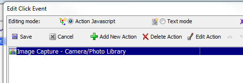
UX Component - Detail View - New Records - Default Values - When you define a List control with a Detail View you can specify Javascript code to return the default value for a field when a new record is created in the Detail View. A new option has been added to the List builder to allow you to automatically use the default value that was defined for the control to which the List field is bound for new record default values.
For example, assume:
When you click the New Record button in the List Detail View, the default value for the FIRSTNAME control (i.e. the control to which the FNAME List field is bound) will be set to 'Sam' because there was an explicit Default value rule set in the List builder. The default value of 'Sam' will be used even though the FIRSTNAME control defined a default value of 'Fred'.
However, assume that you now edit the List and delete the Default value Javascript code for the FNAME field. Now, when you create a new Detail View record, the default value shown in the FIRSTNAME control is governed by the setting of the 'Default values policy for new record in Detail View' property in the List builder.
This property can either be set to:
UX Component - List Control - Detail View - Image Capture using Camera/HTML5 - Disconnected Applications - You can now build mobile, disconnected applications, that include the ability to capture images using the camera on the device. When running on a device that does not have a camera, the image to use can be selected from the file system.
To create a button to capture a new image for an Image control in a List Detail View use the 'Image Capture for List-Detail View - Camera/Photo Library' action.
For more information on capturing images in the List Detail View, click here and search for 'camera'.
Application Server - Report Server - HTML Reports - By default, the Report Server is only used for PDF reports. Now, you have the option of offloading your HTML reports to the report server.
To turn this feature on, go to the Project Properties dialog and check the 'Use for HTML Reports' property.
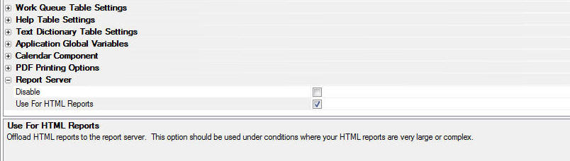
urlencode() Function - New Parameters to Make Signing Requests when Using oAuth Easier - The urlencode() function now takes optional arguments that are useful when working with APIs that require oAuth authentication. In many of these APIs, the request body must be specially encoded.
The flags that you can use are:
Examples:
? urlencode("text-value=foo bar;")
= "text%2dvalue%3dfoo%20bar%3b"
? urlencode("text-value=foo bar;","u")
= "text%2Dvalue%3Dfoo%20bar%3B"
? urlencode("text-value=foo bar;","s")
= "text%2dvalue%3dfoo bar%3b"
? urlencode("text-value=foo bar;","r")
= "text-value%3dfoo%20bar%3b"
? urlencode("text-value=foo bar;","o")
= "text-value%3Dfoo bar%3B"
rsa_hash() function - Generates a RSA digital signature of the data using the key and SHA1, or any other signing method supported by the .NET framework.
Syntax
c result = rsa_hash(c data, C key [, c algorithm])
Example
dim parameters as b = "name=some url parameters"
' Pull the RSA private key out of the file
dim pemFile as c = file.to_string("c:\<somefolder>\<privatekeyfilename>.pem")
pemFile = word(pemFile,2,"-----BEGIN RSA PRIVATE
KEY-----")
pemFile = word(pemFile,1,"-----END RSA PRIVATE
KEY-----")
pemFile = alltrim(pemFile)
? rsa_hash(parameters,pemFile)
=
"EA1c/M2q9QhxTE/EgV5gljzAzeg8Xhj+0DY/7qzF4RXskp5g6ZDimRGJu1f........."
UX Component - {dialog.object}.activateControlContainer(UXControl) Method - Previously this method would activate the Tab or Accordion pane in which the specified UX Control had been placed. Now, the method will also activate the PanelCard in which the control has been placed.
UX Component - List Control - Detail View - No Record in List is Selected Action - A new property has been added to the List control to allows you to specify the action if no record is currently selected (which can happen if the List's 'Allow null selection' property is not checked).
The options are:
Note: If you have not defined any default values for fields then there is little difference between the 'None' option and the 'NewRecord' option because in both cases the Detail View will be enabled and will not have any default values filled in. If the user edits data in the Detail View and then clicks the Save button, a new row will be added to the List.

Grid Component - Query By Example Menus - Internationalization - The menus that are shown in Query by Example can now be internationalized.
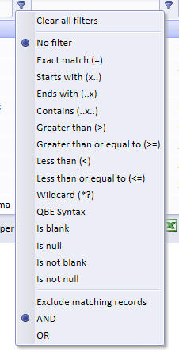
A new property in the Query-by-Example Row section allows you to specify if the entries in the menu should be wrapped in Language Tags (<a5:r>..</a5:r>) or Text Dictionary tags (<a5:t>..</a5:t>).
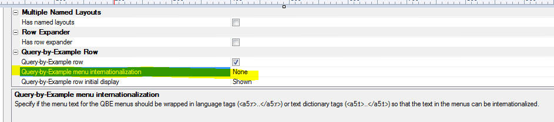
Once you have wrapped the menu strings in tags, you can go to the Language definitions or Text dictionary properties section in the Grid builder to define the replacement strings for each language you want to support.
Web Applications - Xbasic Function Libraries - When you build a web component that does Ajax callbacks, you typically define the Xbasic function that handles the Ajax callback in the component itself (in the Xbasic Function Declarations section of the component). Alternatively you can create a .AEX file that creates a library of global Xbasic functions that your component can call.
Now a new method is now available. The Web Projects Control Panel now has a new category called Xbasic Function Library.

An Xbasic Function Library is a text file with a .a5xbfl extension that is stored in your Web Project. This file contains definitions for one or more Xbasic functions.
To use an Xbasic Function Library in a component you must link the file by specify the Xbasic Linked files property in the component. You can link as many Xbasic Function Library files as you want.

The benefit of using Xbasic Function Library files over defining the Xbasic function directly in the component is that you can share function definitions across multiple components. Xbasic Function Library files are text files, which makes them easy to manage in a source control system (such as Git), and they are easier to work with than .aex files (which provide an alternative method for sharing Xbasic function definitions across multiple components).
NOTE: If an Xbasic function is defined in both the Xbasic Function Declarations section within a component and also in a linked Xbasic Function Library file, the locally defined function is used.
Web Applications - Xbasic Modules - The Web Projects Control Panel now has a new category called Xbasic Module.

An Xbasic Module is a text file with a .a5xbm extension. It is stored in the web project folder. The purpose of an Xbasic Module is to allow you to package Xbasic functions and class definitions so that they can easily be used in other Xbasic code you write.
NOTE: Xbasic Modules are very similar to the concept of Node modules.
An Xbasic Module must end with an exports command that defines which functions and classes the Module 'exports' (makes available to the calling code).
To use an Xbasic Module in your Xbasic code you use the require() function to 'register' the Module.
The require() function can take an optional CRLF delimited string of search paths. By default the require() function will look in the Web Root (if you are running live) and in the Web Project Folder (if you are in Working Preview). If the file is not found there, it will search for the module in the <ExeFolder>\xbasic_modules folder. If you pass in a CRLF delimited string of folder names as the second parameter to the require() function, these folders will also be searched for the module.
For example, assume you had defined the following Xbasic Module called MyXBModule.a5xbm.
The module file was defined as follows:
function greeting as c (name as c )
greeting = "Hello " + ut(name) + " the time is now: " + currentDate()
end function
function currentDate as c ()
currentDate = date()
end function
exports.sayHello = greeting
Notice that the module defines two functions, but only the greeting() function is 'exported' (i.e. made public). Also notice that the greetings() function was exported as sayHello. This means that to the calling code the function sayHello() can be called (but not the internal greetings() function).
Now assume you had define an .a5w page with this code:
<%a5
dim pxb as p
pxb = require("myxbmodule")
?pxb.sayHello("jim")
%>
The Xbasic code in the .A5w page uses the require() function to register the 'myxbmodule' Xbasic Module and assigns the function to a namespace called pxb. Then, to call any of the exported functions, you must use the pxb prefix.
Modules can be loaded recursively. For example, in the definition of a module can reference another module.
What is the Difference between an Xbasic Function Library and an Xbasic Module?
On the surface an Xbasic Function Library and an Xbasic Module seem similar in that they are both files in which you can define multiple Xbasic functions.
However an Xbasic Module only makes 'public' certain of the functions and classes it defines (through use of the 'exports' keyword) and the exported functions are all in their own namespace and must be called using the namespace prefix.
On the other hand an Xbasic Function Library must be linked into a component before any of the functions defined in the library can be called. The functions defined in the Xbasic Function Library are in the same namespace as any locally defined functions in the component itself.
CSS Files - MDI Editor - When you edit a CSS file in the Web Projects Control Panel, the editor is now an MDI window. Previously, a modal window was used. Because the window is a MDI window, you can edit multiple CSS files at once and you can keep the CSS editor open while you edit other files.
Javascript Files - MDI Editor - When you edit a Javascript file in the Web Projects Control Panel, the editor is now an MDI window. Previously, a modal window was used. Because the window is a MDI window, you can edit multiple Javascript files at once and you can keep the Javascript editor open while you edit other files.
Also, while you are editing Javascript files you can test your code by executing it directly in the code editor. You can also switch to the Interactive Windows to test different Javascript code snippets.
NOTE: When you test code in the Javascript editor you are not testing it in the context of the browser. That means you can't test code that assumes that the DOM is present. Also certain Javascript global objects such as window and document are not defined. The alert(), function is also not defined.
The Interactive Window pane in the Javascript editor is shown below. The window is divided into two sections. The top section is the Javascript code that you want to test and the bottom window shows results.
You can print text to the results window by using any of the following functions in your Javascript code:
NOTE: When you are done testing your Javascript, be sure to remove or comment out any print(), printJSON() or printJSONCompact() functions in your code as these functions only are defined in the context of the Javascript editor.

UX Component - Lists - Printing Reports Using Same Filter as List - A common pattern in Grids is to have a button on a Grid that prints a report showing the same records that are in the current Grid query. Now you can use a similar pattern for List controls on a UX component.
NOTE: This feature is only for Lists and Reports based on SQL tables.
When you define the filter and order for the report in the Action Javascript genie you can use these special functions
currentListFilter("NameofList")
currentListOrder("NameOfList")
For example, if your UX component has a List called CUSTOMERS, you might specify the report filter and order as :
currentListFilter("CUSTOMERS")
currentListOrder("CUSTOMERS")
Reports - Custom Data Sources - Previously, when you created a Report in Alpha Anywhere you could choose to base the report on a SQL data source, or a native .dbf table.
Now you can specify that the report is based on a Custom data source.
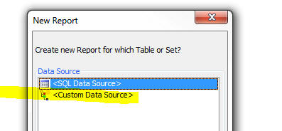
NOTE: When creating 'Project reports' (Reports defined in the Web Projects Control Panel), the option to base the report on a .dbf table is not available.
When you specify a custom data source the following dialog appears:

You specify the name of an Xbasic function that will return the data to be printed by the report.
The Xbasic function can return data in one of two formats:
In both cases, the Xbasic function returns a string of data (that is either in delimited or JSON format - explained below).
The function prototype for the Xbasic function is (assuming you specified that the Function name was myDataFunction in the Function name property in image shown above):
function myDataFunction as c (e as p)
myDataFunction = <<%txt%
......the delimited, or JSON format data goes here
%txt%
end function
Notice that the function takes a single input parameter, e.
The e object that is passed into the function includes the value of any arguments that were passed into the report.
For example, assume that you specified that the Custom Data Source uses an argument called whatCountry. Your Xbasic function can reference the value in this argument as follows:
dim country as c
country = argVal(e.arguments,"whatCountry")
Understanding the Format of the Delimited Data Your Custom Function Must Return
The delimited option allows you to return a CR-LF delimited list of data. Each row in the data that are returned represents a row of data in your report. The 'fields' in the data are typically delimited with a pipe character (e.g. |), but you are free to specify any delimiter. For example, here is how a simple Xbasic function could be defined to return some data for a report.
function myXBfunction as c (e as p)
dim txt as c
txt = <<%txt%
Firstname|Lastname|City
Fred|Smith|Boston
John|Jones|London
%txt%
myXBfunction = txt
end function
Notice that the first row of data in the string that is returned by the function are the field names. In this example, the field names are Firstname, LastName and City.
The first row of data can optionally include additional information that defines the data type and size of each field.
For example:
function myXBfunction as c (e as p)
dim txt as c
txt = <<%txt%
Firstname=C20|Lastname=C30|City=C20|DOB=D|Salary=10.2
Fred|Smith|Boston|12/6/1972|86500.00
John|Jones|London|11/5/1982|76000.00
%txt%
myXBfunction = txt
end function
For Character fields, the format is defined as Cw where 'w' is the size of the field. For Numeric fields, the format is defined as Nw.d where 'w' is the size of the field and 'd' is the number of decimal places.
The following field type codes can be used:
Understanding the Format of the JSON Data Your Custom Function Must Return
The JSON data that your function returns can be Simple or Complex.
Simple JSON
For Simple JSON, the string that you return is just an array of JSON objects, For example:
function myjson as c(e as p)
myjson = <<%json%
[
{"Firstname" : "Fred", "Lastname" : "Smith"},
{"Firstname" : "Harry", "Lastname" : "Jones"}
]
%json%
end function
In this case since no schema is supplied the data are all considered to be character type of length 1024 characters. While the advantage of this format is that is extremely simple, it does mean that you will need to adjust the size of each field you place on your report because its default size will likely be too large.
Complex JSON
For Complex JSON, the string that you return is an object with two properties, schema and data. The schema object defines the schema of the data (for example, field type, size, etc.) and the data property is an array of JSON objects that define the data for the report. For example:
function myjson as c(e as p)
myjson = <<%json%
{
"schema" : { "firstname" : { "type" : "C" , "width": 30 }
, "lastname" : { "type" : "C" , "width": 30}
, "company" : { "type" : "C" , "width": 30}
, "age" : { "type" : "N" , "width" : 3, "decimal" : 0 }
},
"data":
[
{"firstname":"Fred", "lastname":"Smith", "company" : "Alpha Software", "age" : 30},
{"firstname":"John", "lastname":"Jones", "company" : "Beta Software", "age" : 23}
]
}
%json%
end function
In the above example, we have specified the size and type of each field in the data array. Notice that we have also specified the number of decimal places for the numeric field.
The data types supported in the schema are:
Note: If you specify that a field uses the Date (D), Date/Time (T) or Short time (Y) format in the schema, the data in the data array must be a string in UTC date format. For example: 2014-10-27T23:06:50.361Z. The date part format is yyyy-mm-dd and the time part uses GMT. In the case of a Short time field, the date portion of the UTC date string is ignored.
The schema also allows you to extract data from objects within each row and to map property names in the data array to different names. For example in the data shown below, the address property is an object with two sub-properties.
{
"name": "Fred Smith",
"company" : "XYZ Corp",
"address": {
"street": "Main Street",
"number": 23
}
}
Shown below is how the function would be defined to return the JSON data. Notice that the JSON object has both a schema and a data property. The schema indicates what fields will be available to the report. The list of fields specified by the schema are: name, companyName, street and number.
Notice that the data array does not have a property called companyName. It has a property called company. So the schema property for the companyName field indicates that the source of this field is the company property in the data array. Similarly, the street field in the schema is mapped to the address.street property in the data array.
If the definition for a field in the schema omits the source property, then the source is the same as the item name. For example the definition for the name field in the schema shown below does not have a source property, therefore this field is mapped to the name property in the data array.
function myjson as c(e as p)
myjson = <<%json%
{
"schema": {
"name": {
"type": "c",
"width": 30
},
"companyName: {
"source": "company",
"type" : "c",
"width" : 30
},
"street": {
"source": "address.street",
"type": "c",
"width": 40
},
"number": {
"source": "address.number",
"type": "n",
"width": 5,
"decimal": 0
}
},
"data": [
{
"name": "Fred Smith",
"company" : "XYZ Corp",
"address": {
"street": "Main Street",
"number": 23
}
},
{
"name": "John Jones",
"company" : "ABC Corp",
"address": {
"street": "Corner Road",
"number": 3
}
}
]
}
%json%
end function
In the next example, we show how the JSON object that you specify can include image data. The binary data for the image are encoded as base64 strings. The example shows the complete function definition. Notice that the schema indicates that the image field will be stored as a PNG. Notice also that in the first record, the base64 encoded data in the image property does not include the MIME type at the start of the base64 encoded data. This data is therefore presumed to be a PNG image since the schema indicates that the image is a PNG type. Notice however, that the second row of data in the data array has a MIME type prefix on the base64 encoded image data. The data for the image is for a BMP image. The image will therefore be converted from BMP to PNG automatically.
function myjson as c(e as p)
myjson = <<%json%
{
"schema" : {
"name" : { "type" : "C" , "width": 30 },
"image" : { "type" : "Png" }
},
"data":
[
{"name":"John Smith", "image" : "iVBORw...(data truncated for readability)....AAAElFTkSuQmCC" },
{"name":"Jane Smith", "image" : "data:image/bmp;base64,Qk02AwAAA...(data truncated for readability)....AAAADYAAAAAA=="}
]
}
%json%
end function
UX Component - Action Javascript - Dial Telephone Action - A new action has been added to Action Javascript to allow you to dial a telephone number.
The number to dial can either be static (i.e. specified at design time), or it can be read from controls on the UX, columns in a List, or returned by a Javascript function.
Apperian EASE Integration, Mobile Application Management -Added support for Apperian which allows you to publish your PhoneGap apps directly to the Apperian EASE platform.
The Apperian EASE platform can secure, manage and deploy enterprise mobile apps for all platforms.
Apperians mobile application management platform provides:
To publish apps to the Apperian Ease platform, you will need to setup an Apperian account. See the Apperian Web Site for more information.
To enable the Apperian features, from within the PhoneGap App Builder, check the Enable Apperian EASE Integration Options.

Next, enter your Apperian account credentials and make sure to specify the correct Apperian server. Different servers are used for US and non US accounts.
Once the Apperian features have been enabled, a number of optional items are enabled within the PhoneGap App Builder.

The Apperian Admin Console will display all of the apps you may have previously published to the Apperian EASE platform.
To Add A New App To Apperian
Make sure to download and save the app bundle for the target platform. The app bundle files will be automatically
saved to the appDownloads folder of the PhoneGapProjects target project directory.
Next click the Add App button and fill out all of the required information for submission to Apperian.
All of the fields must has valid data and the version number should include a decimal, ie: 1.20, 0.20, 2.52, etc.
The app.bundle.id will be automatically retrieved from the app bundle.

To Update An Existing App
Click the update button. You do not need to upload a new app bundle unless the files have changed.
You can simply edit the information and save.


To Access the Apperian EASE Platform
Log in to your Apperian EASE account at Apperian.
Once you've logged in, you will see the files and data that have been uploaded from Alpha Anywhere.
Further deployment options will be set within the Apperian EASE Management Console.
Keep in mind that you can update the app within Alpha Anywhere and update the app bundle and app meta data
anytime.

AlphaDAO Connection Strings - Mask Passwords - Previously, the connection string builder masked (i.e. obfuscated) the password by using high order characters. For example, a password of 'alpha' would be masked as ''. Now, the connection string builder uses a different technique to mask password that does not use high order characters. The reason for this change is so Alpha Anywhere IIS server can correctly interpret the connection strings.
Passwords masked using the new scheme will now have the 'A5:B64' prefix.
If you edit an existing connection string, the existing masked password will be masked using the new scheme.
NOTE: The reason that the connection string builder masks passwords is so that someone looking over your shoulder as you define a new connection string will not see the real password. This is much like the way a login dialog will mask your password as you enter it.
You do not have make any changes to your existing applications because of this change.
However, if you edit an existing connection string, or you add a new connection string and then publish your application, you will need to ensure that the server is also running this build or a higher build.
There are two methods on the SQL::Connection object that allow you to mask and unmask as string
For example:
dim cn as sql::connection
?cn.MaskPassword("alpha")
= ":A5:B64:YWxwaGE="
?cn.UnMaskPassword(":A5:B64:YWxwaGE=")
= "alpha"
PDF Reports - Set Maximum Allowed Time - You can now set a timeout for PDF reports. This is useful to prevent tying up the Application Server (or Report Server if the Report Server is enabled) for a long time in the event the user requests a report that might take too long to process.
To set the maximum allowed time for a PDF report, open the Project Properties dialog from the Web Control Panel. By default, the timeout is set to 0 seconds (which means that reports will run to completion, regardless of how long they might take).
It is recommended that you set this property to a non-zero value.
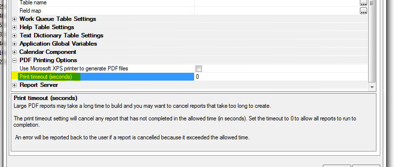
UX Component - Video Player Control - The UX component now includes a built-in video player control. Previously, to add video playing functionality to a UX component, you had to first create a stand-alone Video Player component and then embed the Video Player component into your UX component.
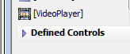
The Video Player Control supports YouTube, Vimeo and HTML5 video players.
The player supports many options specific to the type of
player used.
NOTE The 'auto play' option does not work on mobile devices as it is disabled in an effort to conserve bandwidth.
An 'automatic sizing' option is included to adjust the
video player size on device orientation change. This
feature is important on Android devices.
A typical use case is to include a panel navigator with
two panel cards. The first panel card contains a list
control that may display the video title, the second
panel card includes the video player control. When the
user taps on a row in the list, the second panel card is
transitioned into view and the video may be played.
Download a sample component that demonstrates this
use case.
HTML Reports in Components - Display limit -
Large reports (more than 1,000 records) may be slow to
open when created as HTML reports. This will add load to
the application server and slow the server response. You
can now set a limit on the number of records to display
in a report opened as HTML. This will allow a large
report to open faster as a preview of data in the
report. If the report is then printed as PDF or
exported, the full number of records will be in the
final report.
The HTML Report Viewer Options will show an option for
'Maximum records to display' if the initial view is
HTML. An embedded report in a UX will show the property
in the Report definition. Set the value to 0 to show all
records, or set a value to limit the maximum records to
display. The limit only applies to HTML reports. A
reasonable upper limit is 1,000 records as larger
reports may be slow to generate.
You can set a 'More records' message with placeholders
and a style for the message container. This message will
be added to the bottom of the report if the number of
actual records in the report is greater than the display
limit. The message will not be shown if the number of
records in the report is less that then display limit.

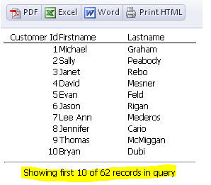
UX Component - Data-Bound Image Field - Image File Transformation Template - If you have image fields that are bound to a character field (that contains the image filename), you need to define the 'Image File Transformation Template' to resolve the image name stored in the table. The Image File Transformation Template can now include field placeholders. For example
{folder}\<value>
If the current record you were viewing had a value of c:\project1 for the 'folder' field, the images for this record would be found in the c:\project1 folder.
UX Component - Hide Container Window - New methods and actions in Action Javascript have been added to hide (i.e. close) a 'container' window.
A 'container' window is a pop-up window that is defined in the UX by wrapping controls in a 'Container' and setting the sub-type to 'Window'.
Opening a container window has always been easy as there is an explicit method in Action Javascript to open a container window and there is a corresponding method ( {dialog.object}.showContainerWindow() ) in the UX object.
However, closing the window programmatically involved first getting a pointer to the actual window object that was created and then calling that object's .hide() method.
Now, the UX object has a new method:
{dialog.object}.hideContainerWindow(containerName);
UX Component - List Control - Client-side Display Format for Date, DateTime and Short-time Fields - A new property has been added to the 'Fields' pane in the List Builder to allows you to set the client-side display format for date, date/time and short-time fields.
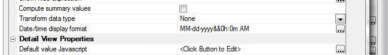
The builder for the 'Date/time display format' field allows you to set the format to:
If you choose <None> then no client-side formatting rule is applied. This means that the date/time values will be displayed using the regional settings on the server from where the UX is loaded. So for example, if the server is located in Switzerland where the date format is dd.MM.yyyy, then dates in the List will be displayed like this: 12.31.2014.
If you choose <Default> (or <Default - date part only> for a date/time field), the client side display format will match the setting for the 'Date format property' (shown below). This property is set on the Properties pane in the UX builder. This property can be overwritten at run-time by setting a session variable (__protected__clientSideDateFormat) at the time a user logs into your application.
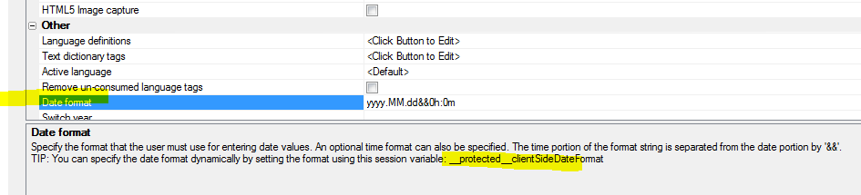
Grid and UX Component - Action Javascript - File Upload - User Defined Action - A new property has been added to the builder for the 'File Upload - User Defined Action'.
The 'Xbasic function arguments array mode' property can be set to either 'Filename' or 'Data'.

For all existing actions this property is set to 'Data'. For all newly defined actions, this property will default to 'Filename'.
When the upload is complete, the 'After upload' Xbasic function is called. This function gets passed an array (in the 'e' object that is passed into the function) that contains information about each of the files that was uploaded.
For example, if the 'Data' option is selected, and (say) the user uploaded two files. the e object passed to the 'After upload' function will contain these properties:
e.fileArray[1].file.characterSet - character set of the
uploaded file
e.fileArray[1].file.contentType - MIME type (e.g.
'application/octet-stream')
e.fileArray[1].fileName - filename of the file on the
client machine
e.fileArray[1].encoding - For text files, specifies the
encoding type
e.fileArray[1].data - data that was uploaded.
e.fileArray[1].file.dataType = Either 'text' or 'binary'
e.fileArray[2].file.characterSet - character set of the
uploaded file
e.fileArray[2].file.contentType - MIME type (e.g.
'application/octet-stream')
e.fileArray[2].fileName - filename of the file on the
client machine
e.fileArray[2].encoding - For text files, specifies the
encoding type
e.fileArray[2].data - data that was uploaded.
e.fileArray[2].file.dataType = Either 'text' or 'binary'
Note that the array has a .data property that contains the data that was uploaded.
On the other hand, if the 'Filename' option is selected the array will not have the .data and file.dataType properties. Instead it will have a property called 'tempFileUploadedData' that contains the filename of the temporary file on the server where the uploaded data was saved. So, in the case where the user uploaded two file, the e object will contain:
e.fileArray[1].tempFileUploadedData
e.fileArray[2].tempFileUploadedData
It is recommended that for your existing actions you edit the action and change the mode to 'Filename'. This will require that you also change your Xbasic function that processes the uploaded data because the array passed to your function will no longer has a .data property.
The benefit of the 'Filename' option over the 'Data' option is that the uploaded data is never loaded into memory. If you use the 'Data' option, the uploaded data is read into memory. This consumes virtual memory on your server and may result in server errors if you have a large number of users uploading files (or just one user uploading a huge file).
With the 'Filename' option, your application will be able to handle larger file uploads, or more users concurrently uploading files.
Security Framework - Alternative Login - Microsoft Live Connect - The Alpha Anywhere alternative login feature now supports user authentication using Microsoft Live Connect.
The developer site for configuring a new Live Connect application can currently be found at:
https://account.live.com/
UX Component - New Quick Start Templates - When you create a new UX component, two new quick-start templates are available:

Watch Video - Part 1
Watch Video - Part 2
Watch Video- Part 3
Xbasic - UTC Date - Convert To and From - Xbasic functions have been added to convert UTC date strings to Xbasic date or time objects.
Examples:
? date_to_utc_date(now())
= "2014-10-28T17:23:27.681Z"
? date_to_utc_date(date())
= "2014-10-28"
? date_from_utc_date( "2014-10-28T17:23:27.681Z")
= 10/28/2014 01:23:27 68 pm
? now()
= 10/28/2014 01:23:36 06 pm
? date_from_utc_date("2014-10-28")
= {10/28/2014}
? date_from_utc_date( "2014-10-28T17:23:27.681Z" , "D")
= {10/28/2014}
? date_from_utc_date("2014-10-28","T")
= 10/27/2014 08:00:00 00 pm
Web Applications - Publishing Application - Command Line Options - Typically when you publish your web application you do it using the user interface in Alpha Anywhere. You start the process starts by clicking the Publish button on the Web Control Panel.
However, there may be cases where you would like to automate the process by creating a batch file that automatically invokes the publishing operation.
A new function, a5w_publish2() has been added to make it easier to do command line publishing.
This function takes either a dot variable or a JSON object that defines the publishing options. The function can be called from a batch file, as described below.
The a5w_publish2() function allows you to set values for the following publish options:
TIP: To view help for this function, enter the following command in the Interactive Window:
a5w_publish2("help")
The dot variable or JSON object that you pass into the a5w_publish2() function can set a sub-set of these properties.
To use the .dot variable syntax:
dim ops as p
ops.profile = "Profile1"
ops.publish_type = 1
dim flag as l
flag = a5w_publish2(ops)
To use the JSON syntax:
dim flag as l
flag = a5w_publish2("{profile: \"Profile1\",
publish_type: 1}")
Assume that you have a Workspace called 'c:\MyWorkspaceFolder\MyWorkspace.adb' and you want to publish all files in the 'project1' folder using the 'profile1' web publishing profile.
You could create the following batch file to do the publish.
Note: The batch file would be all on one line. The line breaks shown below are not part of the code.
C:\Program Files (x86)\alpha5.exe "C:\MyWorkspaceFolder\MyWorkspace.adb"
-COMMAND="a5w_publish2(\"{profile: 'profile1', projName:
'project1', publish_type: 1, exitAfterPublish: true}\")"
UX Component - Client-Side Events - securityNotAuthenticated and securityPermissionDenied Events - Two new client-side events have been added to the UX component.
When an Ajax callback is made and the server sends back a '401' status code in the response, the securityNotAuthendicated event will fire.
If the server sends back a '403' status code in the response, the securityPermissionDenied event will fire.
You can manually set the status code in an Ajax response (for example, if you want to test the events) by setting the
Response.StatusCode
property in the Xbasic function that handles the Ajax callback.
NOTE: Typically, when defining these events, you will also set the Security permission denied action property in the Other section of the UX properties to Fire client-side security events.
For example, assume you have a button on UX component that does an Ajax callback. The function that handles the callback is myXBFunction. Your could define the function as follows:
function myXBFunction as c (e as p)
Response.StatusCode = 401
end function
These events are primarily intended for use in a UX component that contains an integrated login section (for example in a mobile application where the UX has Panel Navigator with at least two Panel Cards and the Login controls are on Panel Card 1 and the afterLogin event sets focus to Panel Card 2).
In the case where the UX contains an integrated login section, these events can be used to direct a user back to a panel or section used for login on a UX component. For example, the UX may have login controls on a panel, PANELCARD_1. The securityNotAuthendicated event could set focus back to that panel.
{dialog.object}.panelSetActive('PANELCARD_1',true);
If the event was fired from a child component, the event
in the child component could redirect the user back to
the login panel.
var po = {dialog.object}.getParentObject();
if(po) {
po.panelSetActive('PANELCARD_1',true);
}
If the child was opened in a window, the child event
could also close the window. If the child UX had a
control named 'list1', the event would be:
var po = {dialog.object}.getParentObject();
if(po) {
var ele = {dialog.Object}.getPointer('list1');
{dialog.Object}.closeContainerWindow(ele);
po.panelSetActive('PANELCARD_1',true);
}
UX Component Security Permission Denied Action Property - The UX component has a new property to set the server permission denied action.
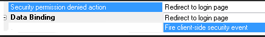
This is the action the security system will take when a request is made from this component and the request is denied because of security restrictions.
This can occur if a UX attempts to open another component that has login restrictions and no one is logged in, or the user has insufficient permission to see the component being requested. The security action will also be taken if the current component has login restrictions, the login has expired, and some request is made to the server, such as a request to refresh a control or do a server-side sort on a column in a list control.
The new property UX property is
Security
permission denied action in the
Other
section of the UX properties.
The default action is Redirect to login page. This action will allow the security to redirect to the login or insufficient permission page as set in the security settings.
The action Fire client-side security event will cause the server to return either a 401 status code if the login has expired, or a 403 status code if a user is logged in, but not allowed to access the requested component. This will fire either the securityNotAuthenticated or securityPermissionDenied client-side events.
This action is currently only available in UX
components. The action applies to only Ajax requests
made from the component. A UX component ('parent'
component) can open other UX components ('child
components'). If any of the child components have a
login restriction, and this action is set to fire the
client side events on any of the components, the
recommended 'best practice' is to set the property to
fire the client side event on all of the child
components and the parent component. This should be set
even if the parent component is always allowed.
UX Component - List Control - Templates - Date Formatting - Typically the data in a List control is all text data. So even though a column in the List might be displaying a date value, the actual data in the List data array for that column is still a string.
The only exception to this is if the List is populated using Javascript and in the Javascript array that was used to populate the List, the column was explicitly set to a Javascript data object. Or, the data in the column was explicitly cast to a date object by setting the Transform data type property on the Fields pane in the List builder.
The template used to display data in the list allows you to specify an optional format.
For example, say you have a column in the List called 'OrderDate', the template for that column in the List will be:
{OrderDate}
However, say you wanted the display format for the OrderDate to be yyyy-MM-dd (e.g. 2014-12-25), then you can add a format directive to the template. For example:
{OrderDate:date('yyyy-MM-dd')}
However, the above format directive only works if the data in the 'OrderDate' column in the List are a date object.
But, as previously discussed, in many cases, the data in the List are all strings of text, so you cannot use the above format directive unless you first cast the data to a date object. When working with Lists that have updateable Detail Views, casing date strings to date objects introduces other complexities and it would be desirable to not have to cast the date string to a date object, but rather to be able to simply format the date string.
To do this, a new format directive has been added. For example:
{OrderDate:dateString('MM-dd-yyyy','yyyy-MM-dd')}
This directive takes two date formats. The first date format is used to parse the date string into a date object and the second date format is the output format.
UX Component - List Control - Detail View - Showing
Edited Fields - When you have a List with an
associated Detail View and you edit the data in one of
the rows of the List, an icon (whose appearance you can
customize) is shown in the List row to indicate that the
List row has data that has been edited, but not yet
synchronized.
You can now indicate the dirty fields in a List row that
has been edited by specify a custom CSS class to apply
to the Detail View control if the field value has been
edited.
For example in the image shown below, you can see that the first row in the List has been edited, and you can now also see that the field in that row that was edited was the city field that was changed to 'Frankfurt'.
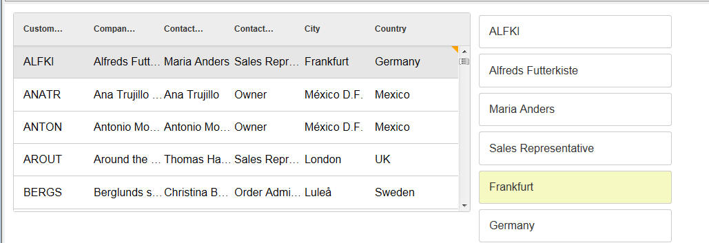
To indicate the CSS class that you want to apply to dirty fields, open the List builder and set the 'Dirty control class name' property.
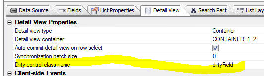
In the above example, the dirtyField CSS class was defined as follows:
.dirtyField {
background: #f6f9c2;
}
Watch Video
Download Component
Export Data - .dbf Tables - Delimited Data - A new option has been added to the export operation so that you can optionally suppress escaping characters.
The 'Disable Character Escapement' property has been added to the export options.

Consider a table that has this data:
| Name | Comment |
| Fred "J" Smith | This is a comment with a trailing \ |
| Hank Kaplan | No comment |
If you export the data and specify that the fields should be quoted, the exported data looks like this:
"NAME","COMMENT"
"Fred \"J\" Smith","This is a comment with a trailing
\\"
"Hank Kaplan","No comment"
Note that quotes in the data itself are escaped and that the trailing backslash in the data is also escaped.
This data could be successfully re-imported in Alpha Anywhere.
However, if you check the new 'Disable Character Escapement' property, the data will be exported as follows.
Note that the quotes in the data are converted to single quotes and the trailing backslash in the data is not escaped.
This data could NOT be successfully re-imported into Alpha Anywhere.
"NAME","COMMENT"
"Fred 'J' Smith","This is a comment with a trailing \"
"Hank Kaplan","No comment"
UX and Grid Component - File Download Action Javascript - You can now specify a dynamic 'client-side filename' by specifying the name of a Javascript function to call. For example, you can specify the following for the 'client-side filename':
function:myfunc
Where 'myfunc' is the name of the Javascript function you want to call to generate the client-side filename. You function must return a url encoded value.
AlphaDAO - Connection Strings - Dynamic - A dynamic connection string is a connection string that is resolved at the time the database connection is opened, rather than at the time the connection string is defined.
Alpha Anywhere has allowed for dynamic connection strings for some time now by allowing you to create a named connection that starts with DynamicConnection_. For example
DynamicConnection_MyCustomApplication
The actual value of the dynamic connection string is resolved by referring to a session variable called:
session.__protected__MyCustomApplication
which defines the actual connection string to be used.
The value of this session variable is typically set when the user logs into the application. For example, it might be set to:
::Name::User1Connection
Now, a new way of creating dynamic connection strings is available using the ::EVAL:: prefix in the named connection string, rather than the ::Name:: prefix.
Prefixing a connection string with ::EVAL:: causes the connection string to be evaluated as an Xbasic expression.
For example, consider the following connection string:
::EVAL::MyFunctionThatReturnsAConnString()
When an AlphaDAO connection is opened using the above string, the MyFunctionThatReturnsAConnString() is evaluated and the return value (which would typically be a named connection string with the ::Name:: prefix) is used as the connection string.
In this next example, the dynamic connection string uses an in-line Xbasic expression:
::EVAL::if(User = "Fred","::name::Fred","::name::EverybodyElse")
UX and Grid Components - Javascript Actions - Copy/Paste - You can now copy and paste Javascript Actions from one component to another component (of the same type). For example, you might have defined several Javascript Actions in component called 'UX1' and now you are building a new UX component and you would like to copy some of the Javascript Actions from 'UX1' to your new UX component.
Create PDF File from HTML - helper::HtmlToPdf Class - Xbasic now has a new class that allows you to convert HTML to PDF.
The helper::HtmlToPdf class has methods that allow you to convert HTML to PDF or a URL to PDF.
The following example code can be pasted into a new script in the Code editor and executed.
dim hp as helper::HtmlToPdf
dim html as c
html = <<%html%
<style>
.mystyle {color: red;}
</style>
<h1>This is So Cool</h1>
<h2>Generate PDF from HTML!</h2>
<p>This shows how you can turn <span class="mystyle">any</span>
html into a pdf</p>
%html%
dir_create_recurse("c:\mypdffiles")
hp.SaveHTMLToPdf(html,"c:\mypdffiles\mypdf.pdf")
'now open the file
sys_open("c:\mypdffiles\mypdf.pdf")
The helper::HtmlToPdf class exposes these methods:
The helper::HtmlToPdf class exposes these properties:
UX Component - List - Detail View - Client-side Validation - Client side validation was not being performed on all of the controls in the Detail View when the user tried to save Detail View edits back to the List. As a result, it was possible to save edits to the List when client-side validation errors should have prevented this. (The validation errors would still have been caught server-side when a sync operation was performed, and bad data could not have been entered into the database.)
UX Component - Android Mobile Devices - Keyboard - Responsive Events - Under some circumstances on Android mobile devices, if the device was in portrait mode and the keyboard came up, the UX would indicate that it was now in landscape mode even though the device orientation was still portrait.
Application Server - HTML Reports - Memory Leak - Fixed a memory leak in the Application Server when doing large HTML reports.
Application Server - Security Framework - SQL Tables for Security Tables - Postgres - Converting the security tables to use a Postgres database was failing. This is now fixed.
Label Reports = Setting an Image as the Background - In some case, setting an image as the background for a label was failing.
UX Component - List Control - Detail View - Incremental Refresh - Fixed an issue with incremental refresh in the case where the UX had multiple Lists in a parent-child relationship and the top-level parent List was based on a SQL statement that joined multiple tables and the top-level List pre-fetched the data for the child Lists.
UX Component - List Controls - Data Type Casting - The List Control allows you to cast the data type in any List column to a date object, number or logical value (by setting the Transform data type property on the Fields pane in the List builder). However, after data in the list was updated, or new rows were added to the List, the data casting rules were not being applied to the new data.
UX Component - List Control - Detail View - Editing a Value that Was Previously NULL - A change has been made in the SQL that gets generated when you edit the value in a field that was previously NULL.
UX Component - List Control - .getValue() method - Reading Value in List Column - The .getValue() method can get the value in a control, or in an individual column in a List control.
When reading the value in a control, there is no concept of a null value (since the UX does not have the concept of setting a control value to null).
However, List columns can contain null values and previously, when you read the value of a List column that contained a null value, .getValue() returned a null value, which was inconsistent with how .getValue() works when reading a control's value. Now, .getValue() returns a blank string when reading the value in a List column that is null.
For example
var = value = {dialog.object}.getValue('list::LIST1::CustNum');
now returns a blank string if the 'CustNum' column in LIST1 in the selected List row is null. Previously it returned null.
Note that you can still determine if a List column really does contain a null value as follows:
//get a pointer to 'LIST1'
var lObj = {dialog.object}.getControl('LIST1');
//get data in first selected row of the List
var _d = lObj.getData(lObj.selection[0]);
//read the value of the 'CustNum' property in the data
object
var _v = _d['CustNum']; //_v will be null if the
data in the column is null
PhoneGap - Web Security Framework - Fixed an issue with the Web Security Framework when running in a PhoneGap shell. Redirecting to the login page after a session timeout, or after an attempt to load a resource for which you did no have permission was not working correctly.
UX and Grid Component - Wait Message - Fixed a case where the wait message was not getting cleared after an Ajax callback had completed.
UX Component - File and Image Upload - Internet Explorer - Fixed a case where a Javascript error was generated when the file or image upload window was opened. Only happened in IE when in the UX component.
UX Component - Panel Navigator - Opening a Child Component in a Panel Card inside a Navigator - Fixed an issue where a child component was being opened in a Panel Card inside the Panel Navigator. After the child component was opened, the swipe gesture to move to a different Panel in the Navigator was causing a Javascirpt error.
Grid Component - Grid Based on Stored Procedure - If a Grid was based on a Stored Procedure and a surrogate Primary Key for query was defined, the _keys array in the Grid Object was not getting defined.
UX and Grid Component - Edit-Combo Control - Dynamically Populating Choices Using Javascript - The choices in an edit-combo control can be dynamically set using Javascript. For example, say you have an control on a UX called 'TEXTBOX1' and you want to dynamically set the choices in the edit-combo. The following code can be used:
var obj = {Dialog.object}.getControl('TEXTBOX1');
var newData = [
{COMPANYNAME: 'Alpha Corp'},
{COMPANYNAME: 'Beta Corp'},
{COMPANYNAME: 'Gamma Corp'}
]
obj.setData(newData);
UX Component - List Control - Freeform Layout - Hyperlinks - When you create a free-form List layout you can use any HTML that you want to lay out each row in the List. Your HTML template will include placeholders for the various fields in the List.
For example:
<div>
Name: {name}<br>
Address: {address}
</div>
Because the template is HTML, you might expect to be able to add hyperlinks. For example:
<div>
Name: {name}<br>
Address: {address}<br>
<a href="page2.a5w?{address}" target="_blank">Open Page</a>
</div>
This will not work because the List is configured to handle all events. However, you can make this pattern work by adding markup to your html to stop event propagation. For example:
<a href="page2.a5w?{address}" target="_blank" onclick="$e.stopPropagation(event);" ontouchstart="$e.stopPropagation(event);">Open Page</a>
With the addition of event handlers for the onclick and ontouchstart events which stop event propagation, the hyperlink will work as expected.
UX Component - PhoneGap Applications - Ajax Callback URL - Setting Dynamically at Runtime - When you build a PhoneGap application you have to specify the URL for Ajax callbacks in the PhoneGap genie.
When you perform any action in your PhoneGap application, the callback is made to the server address specified in the URL for Ajax callbacks property in the PhoneGap genie.
However, you might be building an app where you don't know what server the app will be running on (i.e. you don't know what server the app will be making its Ajax callbacks to) and so you would like to be able to set the URL for Ajax callbacks after the app has loaded.
Here is how this can be done.
First, when you specify the URL for Ajax callbacks, set the URL to some placeholder value. For example:
replaceMe
Next, put a textbox on your UX component where the user can enter the address of the server to which they will be making callbacks. For example, assume that this text box is called: ServerAddress.
Then put a button on the UX to set the callback URL. The callback URL is a property of the UX object (i.e. {dialog.object}. It is called ajaxURL.
Define the following Javascript for this button:
//read the server address from the serverAddress textbox
var prefix = {dialog.object}.getValue('SERVERADDRESS');
//the address should look something like this:
//'http://www.myserver.com/folderWhereAppWasPublished/';
//notice that the server address has a trailing forward slash
//read the existing callback URL
//it will start with 'replaceMe' since that is what you specified
//in the PhoneGap genie
var url = {dialog.object}.ajaxURL
//replace the placeholder with the server address
url = url.replace('replaceMe/',prefix);
//set the URL
{dialog.object}.ajaxURL = url;
Having done this, Ajax callbacks made to the server will now work. But what happens the next time the user loads the application? The Ajax URL will be wrong. You would want the Ajax URL to be automatically set correctly without requiring the user to go through the steps of having to enter the server address again.
The solution to this problem is to store the callback URL in local storage and then to restore from local storage whenever the application is started.
To do this, you would add code like this to the end of the above Javascript:
localStorage.setItem('AJAXCALLBACKURL',url)
In the onRenderComplete client-side event, you would add this code to restore:
//read url from local storage.
var url = localStorage.getItem('AJAXCALLBACKURL');
//if value exist, set the UX's ajaxURL property
if(url != null) {
{dialog.object}.ajaxURL = url;
}
UX Component - List Control - UX Component 'Dirty State' - Just like standard UX Components controls (such as Textbox, Textarea, RadioButton, etc), the List control is bound to a UX component variable. When the value in any control changes the UX component is considered to be 'dirty'. So for example, if you open a UX and then select a row in a List, ghe UX will go from 'clean' to 'dirty'.
In some use cases you might not want the UX go to 'dirty' when the user is making selections in a List. You can easily do this by adding some code to the onBeforeSelect and onSelect event in the List.
Here is the code to add to the List's onBeforeSelect event:
var flagUXIsDirty = false;
//see if the UX is already dirty
flagUXIsDirty = {dialog.object}._dirtyRows[0];
//store the dirty state of the UX in a variable in the
List object
this._flagUXIsDirty = flagUXIsDirty;
Here is the code to add to the List's onSelect event:
//if the UX was not dirty when you selected the row
//set the UX state back to clean after the row is selected.
//you need to use a timeout with a small delay.
if(this._flagUXIsDirty == false) {
setTimeout(function() {
{dialog.object}._setRowState(1,false);
},10);
}
Reporting - Group Breaks - mrec_eof() Function - The mrec_eof() function is useful if you want to put some conditional text in the header, detail or footer of the last group in a parent group.
The mrec_eof() function takes a group name as an argument and returns .t. or .f. depending on whether the you are in the last group within a series of groups.
Consider a report that has two levels of grouping. The top-most group is State and the inner group is City.
For a given state, there will be multiple city groups. For example, NY might have groups for Albany, Buffalo and New York City. E.g.
New York
Albany
Buffalo
New York City
When the 'Albany' group is printing, the following function will return .f.
mrec_eof(grp->city)
When the 'Buffalo' group is printing, the function will also return .f..
But, when the 'New York City' group is printing, the function will return .t. because 'New York City' is the last group within the parent group ('State').
Assume further that the states in the report are:
New York
Oregon
Washington
When the New York and Oregon groups are printing, the following expression will return .f. because both New York and Oregon are not the last groups in the list of states.
mrec_eof(grp->state)
However, when the Washington group is printing, the function will return .t. because Washington is the last group in the list of states.
Say you wanted to put some text in the group footer for the City group, but only if you were printing the group footer for the last group in a given state. To do this you would define a calculated field that referenced mrec_eof(grp->state). For example:
calc1 = if(mrec_eof(grp->city), "Last city in state","More cities...")
Similarly, you might define another calc field:
calc2 = if(mrec_eof(grp->state), "Last state","More states...")
For example
NY
Albany
Group footer for Albany - calc1 = "More cities..."
Buffalo
Group footer for Buffalo - calc1 = "More cities..."
New York City
Group footer for New York City - calc1 = "Last city in state"
Group footer for NY - calc2 = "More states..."
....
Washington
Olympia
Group footer for Olympia - calc1 = "More cities..."
Seattle
Group footer for Seattle - calc1 = "Last city in state"
Group footer for Washington - calc2 = "Last state"
Disabling a Hyperlink - A Behind the Scenes Look At How The UX Binds
Events
A user wrote about a case where he had a hyperlink control on a UX
component. The hyperlink had an click event which displayed an alert and
then 'disabled' the hyperlink by calling the
.setDiabled() method of
the UX component.
The actual code in the hyperlinks' click event was:
alert('I was clicked');
{dialog.object}.setDisabled('HYPERLINK_1');
When running the component in the UX builder with the Mobile
Simulator turned on, or on a mobile device the behavior of the component
was as expected. The first time the user clicked or tapped the hyperlink
the alert would display and then the next time he clicked or tapped on
the hyperlink nothing would display.
However, when running in a browser (or in the UX builder) with the
Mobile Simulator turned off, the behavior was not as expected. Every
time the user clicked the hyperlink the message displayed - the
{dialog.object}.setDisabled('HYPERLINK_1')
had no apparent effect.
Why?
Actually, there is a lot going on here behind the scenes.
First, if you run the component and then look at the source to see how
the click event was bound to the hyperlink, you will see code like this:
$e.add('DLG1.V.R1.HYPERLINK_1',A5.d.evnts.click,function(e)
{
alert('click event');
DLG1_DlgObj.setDisabled('HYPERLINK_1');
},
this,false,'DLG1.V.R1.HYPERLINK_1');
The $e.add() function
is a function in the Alpha Anywhere Javascript library that allows you
to bind events to DOM elements. It is really just a wrapper around the
built in Javascript .addEventListener()
function, but it works with older browsers that don't support the
.addEventListener()
function.
We only need to focus on the first three arguments passed to
$e.add()
First some background on events. The click event is fired when you
click or tap on an HTML element. On a desktop browser, the event fires
as soon as you click on the element. But on a mobile device there is a
300ms delay before the event fires. The reason for the delay is that the
browser on the mobile device is a 'touch enabled' device and when you
tap on the hyperlink it is not sure if the tap is really a tap, or just
the start of some type of dragging gesture. So it waits for 300ms and
then if it determines that you did not start some type of drag gesture,
it decides that you really meant to fire the click event.
This 300ms delay makes your apps feel unresponsive. So Alpha Anywhere
implements a special 'abstractclick'
event on touch enabled devices that fires immediately when the element
is tapped.
The A5.d.events.click
variable is how we allow the user to define a generic click handler, but
at runtime we either bind the code to the built-in 'click'
event or to the 'abstractclick'
event that Alpha Anywhere implements.
So, when running in a browser that is not touch enabled,
A5.d.evnts.click
resolves to 'click' and when running on a browser that is touch enabled,
A5.d.events.click will
resolve to 'abstractclick'.
However, when running on a browser that is not touch enabled, if you
have the Mobile Simulator turned on,
A5.d.events.click will
resolve to 'abstractclick'.
So getting back to the $e.add()
method that the UX uses to bind the event handler to the hyperlink. If
you are on a non-touch enabled device, the code that is being executed
is:
$e.add('DLG1.V.R1.HYPERLINK_1','click',function(e) { code to run when
hyperlink is clicked });
And when on a touch enabled device (or when running in the Mobile Simulator):
$e.add('DLG1.V.R1.HYPERLINK_1','abstractclick',function(e)
{ code to run when hyperlink is clicked });
So now that we know which event is really firing when the user
clicks/taps the hyperlink, lets try to understand why disabling the
hyperlink only seemed to work on a touch enabled browser (or when
running in a Mobile Simulator).
The way in which the code is 'disabling' the hyperlink control is by
calling the UX component's .setDisabled()
method. Here is how the
.setDisabled() method is implemented internally in the Alpha
Anywhere Javascript library:
HTML only allows you to disable form element. Form elements are input
controls and buttons. A hyperlink is not an input control. There is no
concept in HTML of a 'disabled' hyperlink.
So to be clear, the command:
{dialog.object}.setDisabled('HYPERLINK_1')
did nothing more than this:
var ele = {dialog.object}.getPointer('HYPERLINK_1');
//set the value of a 'disabled' property to true
ele.disabled = true;
We could just as easily have set the value of any other 'made up'
property name. For example:
ele.myFicticiousProperty = 'some value';
In the case of the hyperlink element, the 'disabled' property is, in
effect, a 'made up' property. As explained, there is no concept in HTML
of a 'disabled' hyperlink.
So, why does it appear that disabling the hyperlink works on a touch
enabled browser or in the Mobile Simulator, when, as we have discussed,
hyperlinks cannot be disabled?
The reason, as it turns out, is that when Alpha Anywhere fires an
abstract event on an element it checks first to see what the value of
the element's 'disabled'
property is. If the 'disabled'
property ti set to true, it does not fire the event.
In other words, when an 'abstractclick'
event is fired, the event will no do anything if the element's
disabled property is
true.
So now we understand what's going on here. When the component is run on
a non-touch enabled device, the built-in HTML click event is bound and
since hyperlinks cannot be disabled, the event fired every time the
hyperlink is clicked.
But when the component is run in a touch enabled browser (on in the
Mobile Simulator), the abstract 'abstractclick'
event is fired and this event does honor the value of the 'disabled'
property on the element.
So, how could the user have gotten this to work on both touch-enabled
and non-touch browsers? Simple. Just add a line of code to the event
handler:
if(this.disabled) return false;
alert('click event');
{dialog.object}.setDisabled('HYPERLINK_1');
After the .setDisabled()
method has been called on the hyperlink, reading the element's 'disabled'
property will return true. So
this.disabled will be true after the
.setDisabled() method
has been called.
UX Component - List Control - Detail View - A bug was introduced in build 2442 that caused the Detail View to not populate correctly in certain rare situations when a row in the List was selected.
Application Server - Reports - Under certain circumstances, a report would print correctly the first couple of times it was printed, and then start to fail.
UX and Grid Component - Grid Linked Content Section - .getParentObject() Method - If a UX or Grid was opened in a parent Grid's Linked Content Section, the child component could not use the .getParentObject() method to get a pointer to the parent Grid.
| Tabbed UI Component | Using Alternative Login |
The 'Alternative Login' feature allows a user to
log in to an application using their credentials
from a social network, such as Google, Twitter,
LinkedIn, etc. The UX component allows you to build Login dialogs that allow users to log into an application using an Alternative Login. The integrated login feature in the Tabbed UI, however, does not allow you to expose Alternative Logins. Therefore, if you want to allow a user to login into an application that uses the Tabbed UI, you must use a UX component in the Tabbed UI to do the log in. In this video we show how this can be done. Watch Video Date Added: 2014-09-11 |
| UX Component | Downloading a Google Chart as a Bitmap |
In the video 'Using Google Charts as an Alternative to the
Built-in Chart Controls' we showed how you can
use Google Charts in a UX component. In this
video we show how you can add a button to the UX
to download a Google chart as a bitmap image.
The user can then save the image to disk, or
print the image. Note: Not all Google chart types support this feature. Watch Video - Part 1 Watch Video - Part 2 Download Component Date Added: 2014-09-13 |
| Xbasic | Working with SQL Databases |
A common requirement in server-side events
handlers (including custom Ajax callbacks) is to
write some Xbasic code that manipulates data in
a SQL database. Xbasic has a very powerful set of objects (called AlphaDAO) for interacting with SQL databases. In this video we give a quick overview to using Xbasic to work with SQL databases. (For a full introduction and tutorial on using Xbasic to work with data in SQL databases, go to the Help, Open Documentation menu command and type 'Using Xbasic with SQL Tables' in the filter box.) Watch Video - Part 1 Watch Video - Part 2 Watch Video - Part 3 Watch Video - Part 4 |
| Xbasic | Calling Into Node.JS from Xbasic |
Node.js is a popular technology for implementing
server-side utilities. Xbasic has very tight
integration with Node and it is possible to
create Node services that can be called from
Xbasic. In this video we show how a Node service can be defined and then called from Xbasic. Watch Video - Part 1 Watch Video - Part 2 Watch Video - Part 3 |
UX and Grid Component - Ajax Callbacks - OnComplete Javascript - A new option has been added to the method that makes an Ajax callback from the Grid and UX component. You can now specify Javascript to run when the callback is complete.
This option has been exposed in the Action Javascript Ajax Callback action as shown in the image below:

The Javascript that you specify is run after the callback is complete and after any Javascript returned by the callback function has executed.
To specify the after callback complete Javascript in the UX or Grid's .ajaxCallback() method, you set the onComplete property in the optional optionsObject passed in.
For example:
{dialog.object}.ajaxCallback('','','myXbasicFunction','','',{onComplete: function() {
alert('callback is complete')
}
})
Tabbed UI - Integrated Login Feature - When the Login window is opened, the User name field is now automatically given focus. Previously the user needed to explicitly click on the user name control. In addition, when the password field has focus, pressing the Enter key will now execute the Login button.
Security Framework - Importing Data into the User Table - The previous import method, a5ws_ImportUsersDBF(), did not support import into SQL based security tables. The import feature has been rewritten and a new method, a5ws_ImportUsers(), is available. The import will now properly add records into SQL security tables.
The a5ws_ImportUsers() method can be used to import data into either .dbf security tables or SQL security tables. When importing into .DBF tables security tables, this new method is up to twice as fast.
TIP: You can also now use the a5ws_ImportUsers() function from the Interactive Window of the Application Server control panel to import users into your security tables on your server. When you use this function from the Interactive Window it will display a list of all web projects that have security and you can select the project into which you wish to import data.
Xbasic - Node.JS - Extending Server-side Functionality using Node.js - Node.js is a popular program for writing server side utilities in Javascript. Alpha Anywhere now has tight integration with Node and you can now define your own Node modules that can be called from Xbasic.
Watch Video - Part 1
Watch Video - Part 2
Watch Video - Part 3
To create a new 'Node Service' that can be called from Xbaisc, you create a new .js file in the Node_Services folder in the Alpha Anywhere executable folder. The syntax for this .js file is the syntax you would use for any Node module.
To call a Node service from Xbasic, you:
In the following example, we have defined a trivial Node service that takes as its input two variables, 'firstname' and 'lastname' and sends back a string showing: Hello firstname lastname.
The Node service in this example is called 'hello'. Therefore the '_command' property of the JSON command object is set to 'hello'
You must also set an '_id' property in the JSON command object. This can be any value. Using a UUID for this value is convenient.
The Node service is called using the .NodeRequest() method and the result is returned as a JSON string with properties for the error text (if there was an error) and 'result' - the result of the request. The JSON response can be parsed to get Xbasic varibles, or the json_extract() function can be used to extract the 'result' property.
dim n as helper::V8
dim p as p
'generate an id for the request we are about to send to Node.
'we just use a GUID for convenience
p._id = api_uuidcreate()
'set the _command property. This is the name of the Node
service we want to call
p._command = "hello"
'specify any variables you want to pass to the Node service
p.firstname = "Nellie"
p.lastname = "Jones"
'convert the Xbasic .dot variable to a JSON string.
dim jsonCommand as c
jsonCommand = json_generate(p)
?n.NodeRequest(jsonCommand)
= {"_id":"id1","error":"","result":"Hello Nellie Joness"}
Here is how the corresponding Hello.js file is defined. This file must be in the Node_Services folder in the Alpha Anywhere executable folder. This is a standard Node module. It can 'require' any other Node modules that you have written, or that have been installed using NPM (the Node Package Manager).
exports.handler = function(packet,response,sendResponse)
{
var e;
var attachments = null;
var msg = 'Hello ' + packet.firstname
+ ' ' + packet.lastname;
response.result = msg;
sendResponse(response,attachments);
};
If you edit the .js file in the Node_Services folder after having called it, your edits will not be seen until you shutdown the Node service. The next time you call the Node service you will see a short delay as Node starts up.
To shut down the Node service you can all the .NodeShutDown() method on the helper::V8 object instance. For example, in the above example the helper::V8 object instance was called 'n', so the following command will shut Node down.
n.NodeShutdown()
NOTE: Node.exe is automatically installed in the Alpha Anywhere executable folder when you install Node. You do not need to install Node yourself.
UX Component - Client-side Events - onPhoneGapReady - This event fires when the UX component is running in a PhoneGap shell and the PhoneGap library has been loaded.
NOTE: The existing onCordovaReady event has been deprecated and will be removed at some point. Move any code defined for the onCordovaReady event to the onPhoneGapReady event.
UX Component - {dialog.object}.phoneGapLoaded() Method - Returns true if the UX component is running in a PhoneGap shell.
List Control - Detail View - Disconnected Application - Count Records to Be Synchronized - A new method gives a count of the number of unsynchronized records.
Syntax:
object = {dialog.object}.countRecordsToSynch(listId)
Returns an object with properties showing the number of records that have not yet been synchronized with the server. The object has these properties: count, updatedRecords, newRecords, deletedRecords. 'count' is all dirty records (edits, inserts and deletes), 'updatedRecords' is all records that were edited, 'newRecords' is records that were added and 'deletedRecords' is records that were deleted.
Example:
var o = {dialog.object}.countRecordsToSynch(listOrders)
alert('You have ' + o.count + ' records to synchronize')
List Control - Detail View - New Events to Transform Data Before Display and Save - When you define a List control with a Detail View, two new properties are exposed for each List field.
These properties allow you to transform the data before it is displayed in the Detail View and before the Detail View is saved back to the List. The code you you specify in these two properties must 'return' the transformed value.
The Javascript for both of these properties can refer to
this._value
to get the default value that the Detail View control should be populated with when the user clicks on a Detail View row and to get the default value that the List should be updated with when the user clicks the Save button to save the Detail View back to the List.
For example, say that in the List data for row 2, the value for the Lastname field was 'Smith'.
In the onDetailViewPopulate event, you might specify this Javscript
return this._value.toUpperCase()
When the user clicked on row 2, the value shown for the Lastname field in the corresponding Detail View control would be:
SMITH
even though the actual data in the List for that field was 'Smith'.
Similarly, in the onListUpdate event, you might specify this Javascript:
return this._value.toLowerCase()
When Detail View edits were saved back to the List, the List would be updated with the the lowercase version of the data in the Lastname field
UX and Grid - Edit-Combo - Filter choices by searching anywhere in field - Previously, in an edit-combo, as you typed into the textbox, the choices were filtered, starting the search with the first letter in the entry. Now, you can set the 'Search style' property to search anywhere in each entry.
For example, if the choices in the edit-combo were
Austria
France
USA
UK
and you typed 'U' in the textbox, the choices would be filtered to
USA
UK
Now, if you set the 'search style' to 'Anywhere in field', the choices will be filtered to
Austria
USA
UK
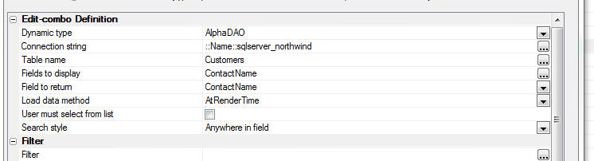
UX Component - HTML Editor - Toolbar Icons - You can now customize all of the icons used in the HTML editor toolbar.
Reports - SQL - Native SQL - Previously, if a report was based on a custom SQL statement and the SQL type was set to 'Native', during execution of the report the SQL statement was parsed (sometimes more than once). Parsing the SQL was necessary in order to determine if the report used arguments that were not defined (and therefore if a prompt should be shown for missing arguments) and in order to add in dynamic filters and order definitions.
In certain cases, the native SQL being passed to the report engine was so complex that parsing the SQL added a substantial delay to rendering the report.
Now, if you specify that the report data source uses native SQL the SQL query for the report will never be parsed. It will simply be passed to the database engine to execute.
As a result of this change if your native SQL statement uses arguments and you do not pass in values for all of the arguments used in the SQL, the report will no longer be able to dynamically prompt for missing argument values. Also if you are attempting to dynamically add a filter or order to the report at runtime, this will no longer work in the case were the report is based on native SQL.
UX Component - List Control - Scroller - Previously, the 'scroller' feature was only supported for Lists if the UX style was set to iOS7, AndroidDark or AndroidLight. Now, the scroller is supported for all styles.
UX Component - Security Framework - Error Messages - Errors returned from the server-side Action Scripts to validate web security values, save web security values, and change web security passwords may not display property if the UX uses Panels, a placeholder is specified for the UX component validation errors, or the option to show errors in a popup window is selected. This is now fixed. The Action Scripting actions in the server-side events must be edited to apply the change. Select any of the web security actions in a server-side event and select "Edit action". Click OK to save and the code will be updated.
Grid Component - Oracle 9i - Fixed an issue using a Grid with Oracle9i.
UX Component - Textbox and Textarea Controls - Help Icon - Container With Layout Mode - If a textbox or textarea control had its help icon turned on, and if the icon was displayed left or right of the control and if the UX layoiut mode was set to 'Container width' (the default mode), the icon would show above or below the control. This is now fixed.

UX Component - Data Binding - Views - Auto-increment - Entering new records into a UX component that was bound to a View (rather than a Table) which had an auto-increment primary key would fail. The record was inserted, but not refreshed after insert.
UX Component - Display Wait Message on Ajax Callback - In some cases the wait message was not being cleared after the callback completed and the screen remained in a locked state.
UX and Grid Components - Lookup Grids - SQL - Filter - If you defined a Lookup Field that used a Grid based on a SQL database and you specified that the Lookup Grid had both a static filter and a dynamic filter, you would get an error when opening the lookup Grid. The error only happened if the static filter was defined as a 'base' filter.
Grid Component - Image Download - Detail View - Image download of an image field in the Detail View part was not working correctly.
Grid Component - File Upload Action - New Record Rows - Uploading a file on a new record row caused an error.
UX Component - HTML Editor - Container Window - If you added a textarea control (configured as an HTML editor) into a Window Container, then when the window was displayed, the HTML editor was displayed, but you could not type into the editor.
Grid and UX Builder - Working Preview - Internet Explorer V10 and Earlier - If you had IE10 or earlier installed on your computer, in some cases you would get a Javascript error when testing a component in Working Preview.
AlphaDAO - Oracle - Returning a Resultset from a Stored Procedure - Returning a SQL::Resultset object from an Oracle stored procedure can be tricky depending on which version of Oracle you are using.
As an alternative to returning a resultset from a stored procedure, you can use an Oracle function.
In this example we show how a resultset is returned using an Oracle function.
NOTE: The Oracle database used in this example was created by using the Workspace Upsize Genie (see the 'Tool' menu when the Control Panel has focus) to upsize the sample Alphasports Workspace that ships with Alpha Anywhere.
dim cn as sql::Connection
dim flag as l
flag = cn.open("::Name::oracle_alphasportsUpsize")
dim sql as c
sql = <<%str%
create or replace FUNCTION REFCURSOR_CUST(p_city IN VARCHAR2) RETURN
SYS_REFCURSOR AS p_recordset SYS_REFCURSOR;
BEGIN
OPEN p_recordset FOR select FIRSTNAME, LASTNAME, BILL_CITY from CUSTOMER
where bill_city LIKE p_city;
return p_recordset;
END REFCURSOR_CUST;
%str%
'Oracle does not like CRLF in statements, so convert CRLF to spaces
dim sql2 as c
sql2 = stritran(sql,crlf()," ")
'Execute the SQL statement to define the function
flag = cn.Execute(sql2)
dim sql::arguments
args.add("Whatcity","Boston")
'Execute the function. Notice the 'from dual'
syntax that Oracle requires
flag = cn.Execute("select REFCURSOR_CUST(:whatcity) from dual",args)
dim rs as sql::resultset
rs = cn.ResultSet
dim txt as c
txt = rs.ToString()
showvar(txt)
Here is what we see:
Mary McDonald Boston
Richard Queen Boston
If you are using Oracle 12, you have the option of using implicit cursors in a stored procedure.
The above function definition could be written as the following stored procedure:
CREATE OR REPLACE PROCESURE SP_GETCUSTOMERS (p_city IN VARCHAR2)
AS
p_recordset SYS_REFCURSOR;
BEGIN
OPEN p_recordset FOR SELCT FIRSTNAME, LASTNAME, BILL_CITY FROM CUSTOMER WHERE BILL_CITY LIKE P_city;
DBMS_SQL_RETURN_RESULT(p_recordset);
END;
UX Component - In-Control Buttons - Delete Text - Only Show Icon if Existing Text - The In-Control Button feature of a textbox allows you to embed icon inside a textbox. A typical use for for this feature is to allow the user to easily clear out existing text in the control.
You might want the icon to only show if there is existing text in the textbox, as shown in the the screenshots below.
 |
 |
In order to do this you will need to add code to t he Click action for the in-control button and to the onKeyUp event for the textbox control.
You will also need to add code to the onRenderComplete client-side event of the UX to set the initial state of the icon.

Here is the code you need to add to the Click action:
//clear the value in the control
{this}.value = '';
//get a pointer to the element that contains the
icon and hide it
var ele = $('{dialog.ComponentName}.V.R1.TXT1.CUSTOMBUTTONSTATIC.0')
ele.style.display = 'none';
Here is the code to add to the onKeyUp event for the textbox.
//get a pointer to the element that contains the icon
var ele = $('{dialog.ComponentName}.V.R1.TXT1.CUSTOMBUTTONSTATIC.0');
//if there is text in the control, show the icon,
else hide the icon
if(this.value == '') {
ele.style.display = 'none';
} else {
ele.style.display = '';
}
Here is the code for the onRenderComplete client-side event to set the initial state of the icon:
var ele = $('DLG1.V.R1.TXT1.CUSTOMBUTTONSTATIC.0')
ele.style.display = 'none';